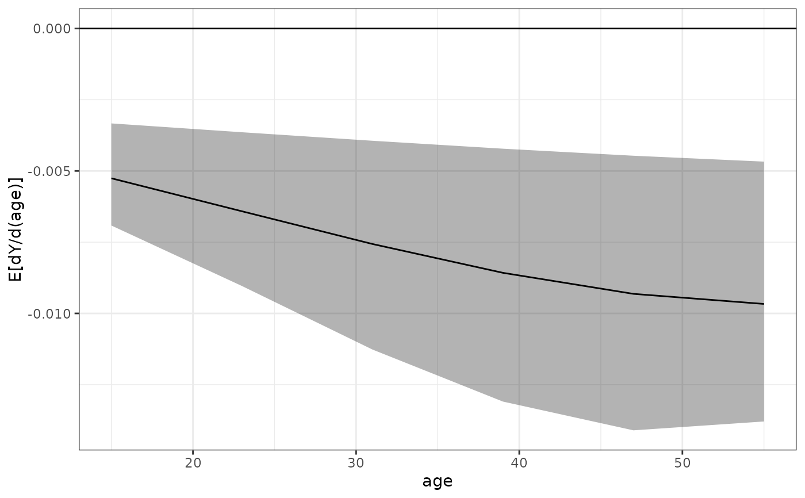
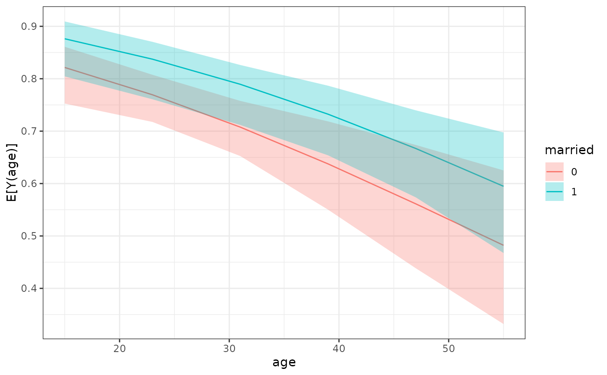
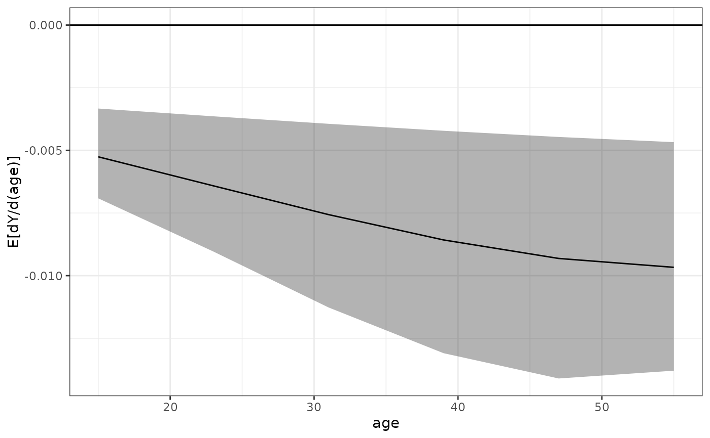
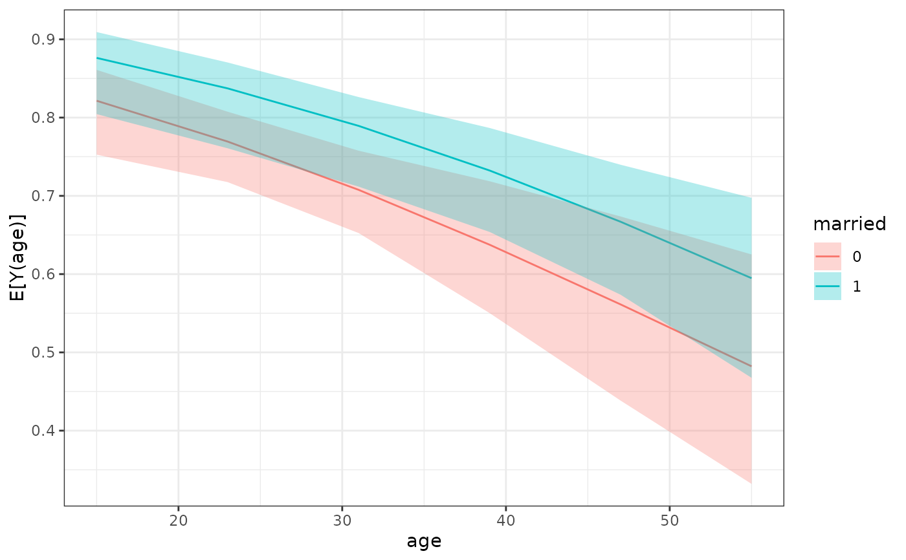

sim_adrf() is a wrapper for sim_apply() that computes average dose-response functions (ADRFs) and average marginal effect functions (AMEFs). An ADRF describes the relationship between values a focal variable can take and the expected value of the outcome were all units to be given each value of the variable. An AMEF describes the relationship between values a focal variable can take and the derivative of ADRF at each value.
Usage
sim_adrf(
sim,
var,
subset = NULL,
by = NULL,
contrast = "adrf",
at = NULL,
n = 21,
outcome = NULL,
type = NULL,
eps = 1e-05,
verbose = TRUE,
cl = NULL,
...
)
# S3 method for class 'clarify_adrf'
print(x, digits = 4L, max.ests = 6L, ...)Arguments
- sim
a
clarify_simobject; the output of a call tosim()ormisim().- var
the name of a variable for which the ADRF or AMEF is to be computed. This variable must be present in the model supplied to
sim()and must be a numeric variable taking on more than two unique values.- subset
optional; a vector used to subset the data used to compute the ADRF or AMEF. This will be evaluated within the original dataset used to fit the model using
subset(), so nonstandard evaluation is allowed.- by
a one-sided formula or character vector containing the names of variables for which to stratify the estimates. Each quantity will be computed within each level of the complete cross of the variables specified in
by.- contrast
a string naming the type of quantity to be produced:
"adrf"for the ADRF (the default) or"amef"for the AMEF.- at
the levels of the variable named in
varat which to evaluate the ADRF or AMEF. Should be a vector of numeric values corresponding to possible levels ofvar. IfNULL, will be set to a range from slightly below the lowest observed value ofvarto slightly above the largest value.- n
when
at = NULL, the number of points to evaluate the ADRF or AMEF. Default is 21. Ignored whenatis notNULL.- outcome
a string containing the name of the outcome or outcome level for multivariate (multiple outcomes) or multi-category outcomes. Ignored for univariate (single outcome) and binary outcomes.
- type
a string containing the type of predicted values (e.g., the link or the response). Passed to
marginaleffects::get_predict()and eventually topredict()in most cases. The default and allowable option depend on the type of model supplied, but almost always corresponds to the response scale (e.g., predicted probabilities for binomial models).- eps
when
contrast = "amef", the value by which to shift the value ofvarto approximate the derivative. See Details.- verbose
logical; whether to display a text progress bar indicating progress and estimated time remaining for the procedure. Default isTRUE.- cl
a cluster object created by
parallel::makeCluster(), or an integer to indicate the number of child-processes (integer values are ignored on Windows) for parallel evaluations. Seepbapply::pblapply()for details. IfNULL, no parallelization will take place.- ...
for
sim_adrf(), additional arguments passed tomarginaleffects::get_predict()(and eventually topredict()) to compute predictions. Forprint(), ignored.- x
a
clarify_adrfobject.- digits
the minimum number of significant digits to be used; passed to
print.data.frame().- max.ests
the maximum number of estimates to display.
Value
A clarify_adrf object, which inherits from clarify_est and is similar to
the output of sim_apply(), with the additional attributes "var" containing
the variable named in var, "by" containing the names of the variables specified in by (if any), "at" containing values at which the ADRF or AMEF is evaluated, and "contrast" containing the argument supplied to contrast. For an ADRF, the average marginal means will be named
E[Y({v})], where {v} is replaced with the values in at. For an AMEF, the average marginal effects will be
named dY/d({x})|{a} where {x} is replaced with var and {a} is replaced by the values in at.
Details
The ADRF is composed of average marginal means across levels of the focal predictor. For each level of the focal predictor, predicted values of the outcome are computed after setting the value of the predictor to that level, and those values of the outcome are averaged across all units in the sample to arrive at an average marginal mean. Thus, the ADRF represent the relationship between the "dose" (i.e., the level of the focal predictor) and the average "response" (i.e., the outcome variable). It is the continuous analog to the average marginal effect computed for a binary predictor, e.g., using sim_ame(). Although inference can be at each level of the predictor or between two levels of the predictor, typically a plot of the ADRF is the most useful relevant quantity. These can be requested using plot.clarify_adrf().
The AMEF is the derivative of the ADRF; if we call the derivative of the ADRF at each point a "treatment effect" (i.e., the rate at which the outcome changes corresponding to a small change in the predictor, or "treatment"), the AMEF is a function that relates the size of the treatment effect to the level of the treatment. The shape of the AMEF is usually of less importance than the value of the AMEF at each level of the predictor, which corresponds to the size of the treatment effect at the corresponding level. The AMEF is computed by computing the ADRF at each level of the focal predictor specified in at, shifting the predictor value by a tiny amount (control by eps), and computing the ratio of the change in the outcome to the shift, then averaging this value across all units. This quantity is related the the average marginal effect of a continuous predictor as computed by sim_ame(), but rather than average these treatment effects across all observed levels of the treatment, the AMEF is a function evaluated at each possible level of the treatment. The "tiny amount" used is eps times the standard deviation of var.
See also
plot.clarify_adrf() for plotting the ADRF or AMEF; sim_ame() for computing average marginal effects; sim_apply(), which provides a general interface to computing any quantities for simulation-based inference; summary.clarify_est() for computing p-values and confidence intervals for the estimated quantities.
marginaleffects::avg_slopes() and marginaleffects::avg_predictions() for delta method-based implementations of computing average marginal effects and average marginal means.
Examples
data("lalonde", package = "MatchIt")
# Fit the model
fit <- glm(I(re78 > 0) ~ treat + age + race +
married + re74,
data = lalonde, family = binomial)
# Simulate coefficients
set.seed(123)
s <- sim(fit, n = 100)
# ADRF for `age`
est <- sim_adrf(s, var = "age",
at = seq(15, 55, length.out = 6),
verbose = FALSE)
est
#> A `clarify_est` object (from `sim_adrf()`)
#> - Average dose-response function of `age`
#> - 100 simulated values
#> - 6 quantities estimated:
#> E[Y(15)] 0.8443
#> E[Y(23)] 0.7976
#> E[Y(31)] 0.7416
#> E[Y(39)] 0.6770
#> E[Y(47)] 0.6052
#> E[Y(55)] 0.5290
plot(est)
 # AMEF for `age`
est <- sim_adrf(s, var = "age", contrast = "amef",
at = seq(15, 55, length.out = 6),
verbose = FALSE)
est
#> A `clarify_est` object (from `sim_adrf()`)
#> - Average marginal effect function of `age`
#> - 100 simulated values
#> - 6 quantities estimated:
#> E[dY/d(age)|15] -0.005258
#> E[dY/d(age)|23] -0.006415
#> E[dY/d(age)|31] -0.007563
#> E[dY/d(age)|39] -0.008575
#> E[dY/d(age)|47] -0.009314
#> E[dY/d(age)|55] -0.009668
summary(est)
#> Estimate 2.5 % 97.5 %
#> E[dY/d(age)|15] -0.00526 -0.00692 -0.00333
#> E[dY/d(age)|23] -0.00641 -0.00904 -0.00364
#> E[dY/d(age)|31] -0.00756 -0.01127 -0.00394
#> E[dY/d(age)|39] -0.00858 -0.01309 -0.00422
#> E[dY/d(age)|47] -0.00931 -0.01410 -0.00447
#> E[dY/d(age)|55] -0.00967 -0.01379 -0.00467
plot(est)

# ADRF for `age` within levels of `married`
est <- sim_adrf(s, var = "age",
at = seq(15, 55, length.out = 6),
by = ~married,
verbose = FALSE)
est
#> A `clarify_est` object (from `sim_adrf()`)
#> - Average dose-response function of `age`
#> - within levels of `married`
#> - 100 simulated values
#> - 12 quantities estimated:
#> E[Y(15)|0] 0.8215
#> E[Y(23)|0] 0.7694
#> E[Y(31)|0] 0.7077
#> --- 6 rows omitted. ---
#> E[Y(39)|1] 0.7324
#> E[Y(47)|1] 0.6669
#> E[Y(55)|1] 0.5948
plot(est)

## Difference between ADRFs
est_diff <- est[7:12] - est[1:6]
plot(est_diff) + ggplot2::labs(y = "Diff")
# AMEF for `age`
est <- sim_adrf(s, var = "age", contrast = "amef",
at = seq(15, 55, length.out = 6),
verbose = FALSE)
est
#> A `clarify_est` object (from `sim_adrf()`)
#> - Average marginal effect function of `age`
#> - 100 simulated values
#> - 6 quantities estimated:
#> E[dY/d(age)|15] -0.005258
#> E[dY/d(age)|23] -0.006415
#> E[dY/d(age)|31] -0.007563
#> E[dY/d(age)|39] -0.008575
#> E[dY/d(age)|47] -0.009314
#> E[dY/d(age)|55] -0.009668
summary(est)
#> Estimate 2.5 % 97.5 %
#> E[dY/d(age)|15] -0.00526 -0.00692 -0.00333
#> E[dY/d(age)|23] -0.00641 -0.00904 -0.00364
#> E[dY/d(age)|31] -0.00756 -0.01127 -0.00394
#> E[dY/d(age)|39] -0.00858 -0.01309 -0.00422
#> E[dY/d(age)|47] -0.00931 -0.01410 -0.00447
#> E[dY/d(age)|55] -0.00967 -0.01379 -0.00467
plot(est)

# ADRF for `age` within levels of `married`
est <- sim_adrf(s, var = "age",
at = seq(15, 55, length.out = 6),
by = ~married,
verbose = FALSE)
est
#> A `clarify_est` object (from `sim_adrf()`)
#> - Average dose-response function of `age`
#> - within levels of `married`
#> - 100 simulated values
#> - 12 quantities estimated:
#> E[Y(15)|0] 0.8215
#> E[Y(23)|0] 0.7694
#> E[Y(31)|0] 0.7077
#> --- 6 rows omitted. ---
#> E[Y(39)|1] 0.7324
#> E[Y(47)|1] 0.6669
#> E[Y(55)|1] 0.5948
plot(est)

## Difference between ADRFs
est_diff <- est[7:12] - est[1:6]
plot(est_diff) + ggplot2::labs(y = "Diff")